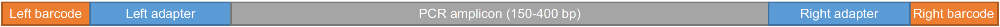

We are using the CRISPR sequencing service at MGH DNA Core. We usually add our own barcodes to pool multiple samples as one sample for submission. Over there, they will add the sequencing adapters and barcodes for Illumina NGS. The returned data is an interleaved fastq file (R1 and R2 are in the same file). Therefore, we need to demultiplex it before checking mutations.
We do two round of PCRs to add barcodes to the PCR amplicons. The final PCR amplicons are like this:

The program firstly look for left adapter and right adapter to get the orientation of the read: left adapter = R1 and right adapter = R2. Then check the barcode combination to sort them into different samples.
The final output is a zipped file containing all fastq.gz files.